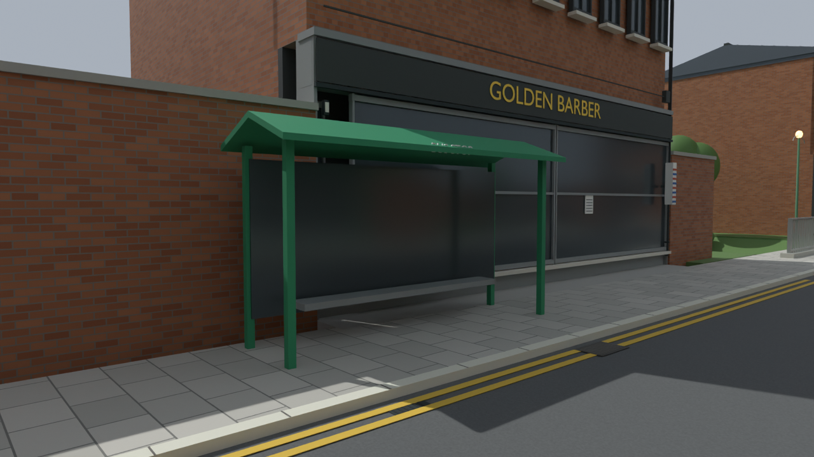
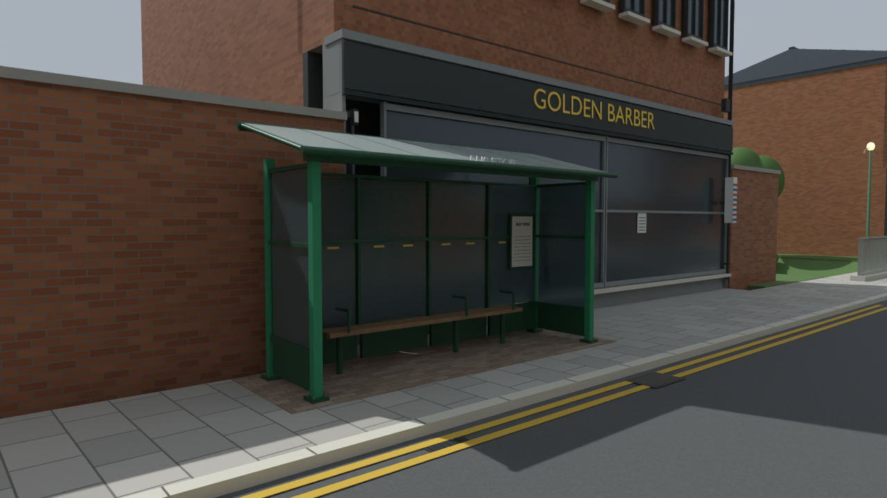
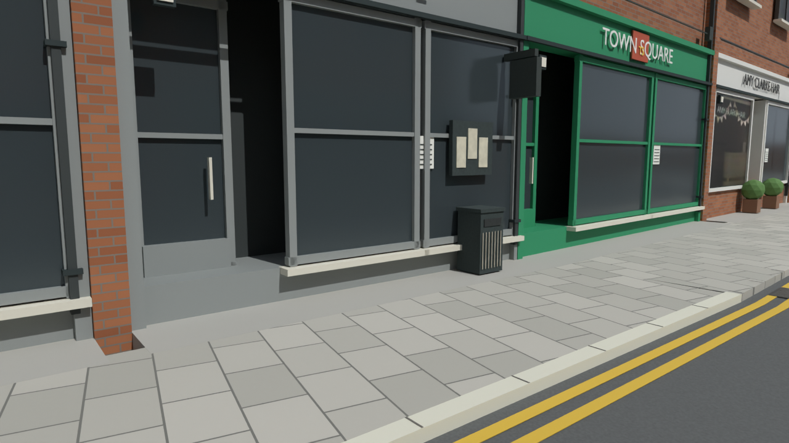
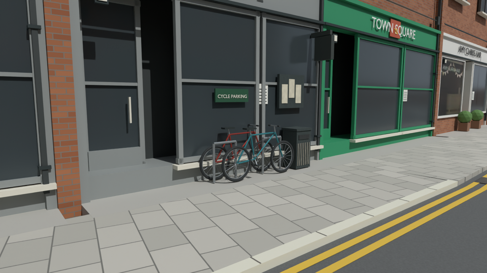
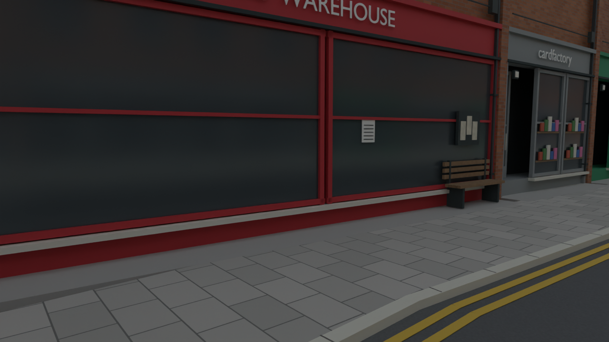
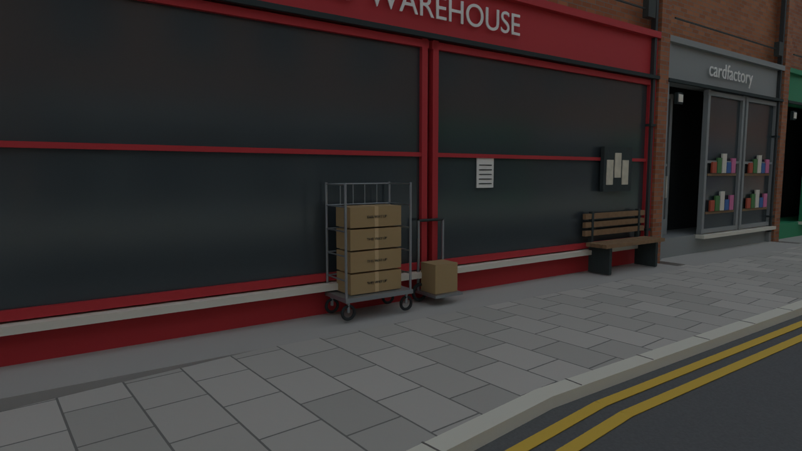
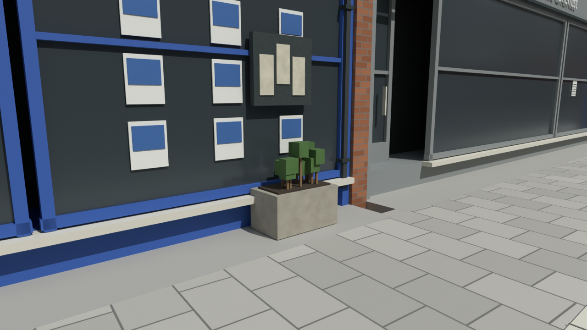
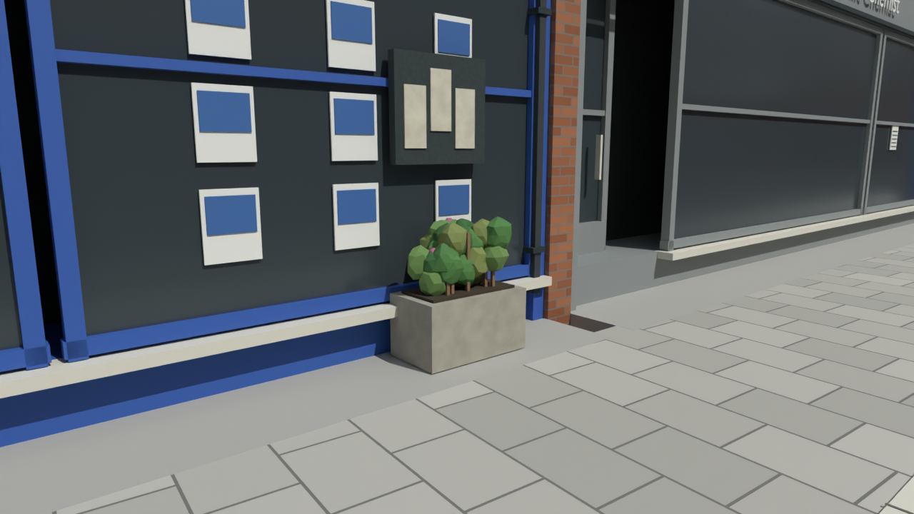
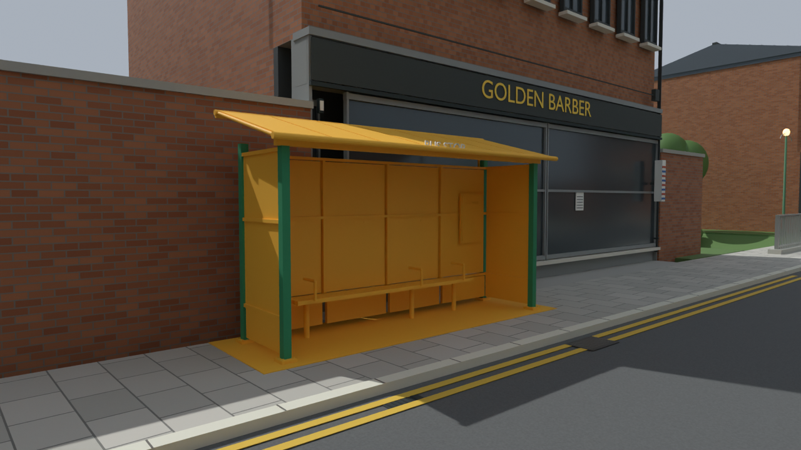

375 new closed meshes. Shelter refinement follows the existing placement and reference photo; cycle/delivery placements are inferred street dressing. Matched Blender previews, not game footage.
Retained road/pub routes and 224 selected local pavement/shelter samples pass. All 13,377 previous mesh geometries and 44 reference hashes preserved. Full pavement circulation and BO3 gameplay remain unverified.
Segmented smoke glazing, lower panels, visible frame joints, bolted feet, sloping roof panels/ribs, gutter, timber seat, divider arms, timetable and block paving.


Two original bicycles with tyres, rims, spokes, frame tubes, saddles, grips, chains and pedals, beside steel stands.


Wheeled roll cage with rails, taped cartons and handling labels, plus a parcel handtruck.


Varied leaf clusters and small flowers replace the previous cube foliage. Existing planters retained.


Gold marks the new detail; this temporary colour is not saved into the map.
